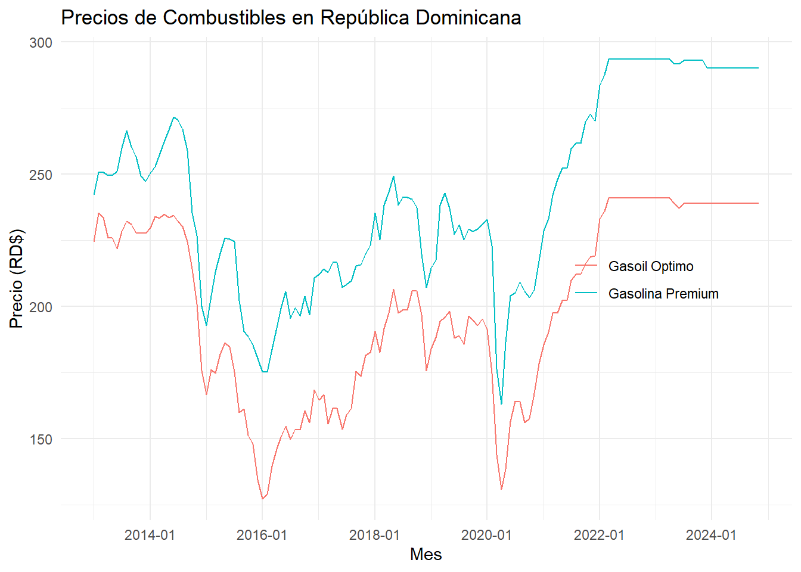

En esta ocacion estaremos descargando los precios de los combustible de República Dominicana desde la apis del portal de datos abiertos del gobierno dominicano. Utilizaremos el paquete httr para realizar la petición a la API y la función de cbind_rows del paquete dplyr para convertir la lista de resultados en un dataframe.
El precio de los combustible son actualizados cada semana, por lo que la data tiene una frecuencia semanal, el precio es publicado el viernes de cada semana, pero se aplica a partir de las doces de la noche, por lo que la observación de los precios es a partir del sábado de cada semana. Por lo tanto, si queremos obtener los precios de los combustibles para una fecha específica, debemos asegurarnos de que esta fecha sea un sábado.
Que son y como funcionan las Apis?
Las APIs (Application Programming Interfaces) son conjuntos de reglas y protocolos que permiten la comunicación entre diferentes aplicaciones. En el caso de las APIs web, estas permiten que una aplicación pueda solicitar datos a otra aplicación a través de internet.
En R, las APIs se pueden utilizar para obtener datos de diferentes fuentes, como bases de datos, servicios web, etc. Para utilizar una API en R, se necesita conocer la URL de la API y los parámetros que se deben enviar en la solicitud.
Función y paquetes
La función GET del paquete httr se utiliza para realizar una solicitud HTTP GET a una URL específica. Esta función devuelve un objeto de respuesta que contiene el contenido de la respuesta, el código de estado HTTP y otros metadatos.
Pasos:
Instalar y cargar los paquetes necesarios.
Realizar la solicitud a la API utilizando la función GET.
Extraer el contenido de la respuesta utilizando la función content.
Acceder a los datos específicos de la respuesta.
Convertir la respuesta de lista a dataframe.
Show the code
# Necesitamos realizar la consulta con la fecha:date <-"2023-10-01"# Fecha de los precios de los combustibleslink <-paste0("https://api.digital.gob.do/v1/fuels?date=", date)# Hacemos la solicitud a la API de la DGIIprecios <- httr::GET(link)# Extraemos el contenido de la solicitudrespuesta <- httr::content(x = precios) # Esto devuelve un objeto de tipo lista# Accedemos a la sección de datosresultados <- respuesta[["data"]] # El resultado es una lista de precios de combustibles
En el código anterior, primero definimos la fecha para la cual queremos obtener los precios de los combustibles. Luego, construimos la URL de la API utilizando esa fecha. A continuación, utilizamos la función GET del paquete httr para realizar la solicitud a la API. Finalmente, extraemos el contenido de la respuesta y accedemos a los datos específicos que nos interesan.
El resultado es una lista con la siguiente estructura:
La lista contiene información sobre los precios de diferentes combustibles, incluyendo el nombre del combustible, el precio por galón y la fecha de actualización.
Ahora convertiremos esta lista en un dataframe para facilitar su análisis. Utilizaremos la función bind_rows del paquete dplyr para combinar los elementos de la lista en un único dataframe.
Show the code
combustibles <- dplyr::bind_rows(resultados) # Convertimos la lista en un dataframecombustibles |> dplyr::glimpse()
Si queremos pasar a un nivel más avanzados, creamos una función que nos permita obtener los precios de los combustibles para cualquier fecha que le indiquemos.
Creando una función para obtener precios de combustibles
Resulta que si utilizamos la función get_combustibles con una fecha y esta no corresponde a una fecha que no coincide con un sábado, la API nos devolverá los datos que estén más cercanos a esta fecha. Por lo tanto, es importante asegurarnos de que la fecha que pasamos a la función sea el sexto día de la semana.Para obtener un histórico de precios de los combustibles, podemos generar una secuencia de fechas semanales.
Vamos a crear una función la cual nos de una fecha desde el primer sábado de enero de un año, y luego utilizaremos esta función para generar una secuencia de fechas semanales. Posteriormente, aplicaremos la función get_combustibles a cada una de estas fechas para obtener los precios correspondientes.
Show the code
library(dplyr)# Calcula el primer sabado de enero de cada añoget_first_friday <-function(year) { first_week <-as.Date(paste0(year, "-01-01")) + (6-as.POSIXlt(paste0(year, "-01-01"))$wday)return(first_week)}fechas <-seq(get_first_friday(2013), Sys.Date(), by ="week"# Generamos una secuencia de fechas semanales) combustibles <-lapply(fechas, get_combustibles) # Aplicamos la función a cada fecha# Convertimos la lista de dataframes en un único dataframehistorico_fuels <- dplyr::bind_rows(combustibles) # Unimos todos los dataframes en uno solo# Vamos a obtener el precio de la última semana de cada mes:combustibles_months <- historico_fuels |>mutate(fecha =as.Date(date), # Convertimos la columna fecha a tipo Dateprice =as.numeric(price) # Convertimos la columna price a tipo numérico ) |>group_by(mes = lubridate::floor_date(fecha, "month"), name # Agrupamos por mes y nombre del combustible ) |>slice_tail(n =1) |># Obtenemos el precio de la última semana de cada mesungroup() |>select(-fecha)
Visualización de los precios de los combustibles
Show the code
library(ggplot2)combustibles_months |>filter(stringr::str_detect(name, "Gasolina Premium|Gasoil Optimo")) |>ggplot(aes(x = mes, y = price, color = name)) +geom_line() +labs(title ="Precios de Combustibles en República Dominicana",x ="Mes",y ="Precio (RD$)",color =NULL) +theme_minimal() +scale_x_date(date_labels ="%Y-%m", date_breaks ="2 year") +theme(legend.position =c(.8, 0.5), # Posición de la leyenda )

Tabla de precios en los últimos años
Show the code
# Vamos a crear una función para obtener el primer viernes de la primera semana de enero de un año